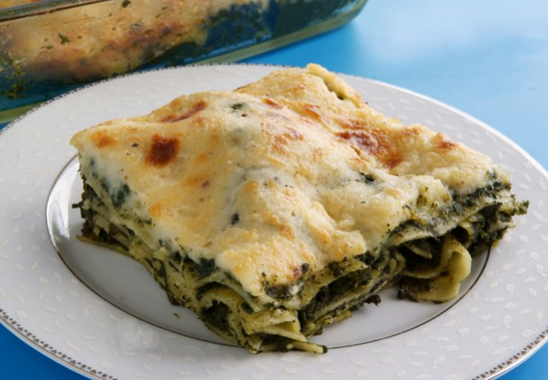

Spinach Lasagna

Description
Eine leckere Spinat-Lasagne, die ich schon öfters gemacht habe und immer wieder erstaunt war, wie einfach und wirklich gut sie ist.
Rezept kommt von Antonia.
Ingredients
- 300 g (tiefgekühlter) Blattspinat
- 400 g Doppelrahm-Frischkäse
- 2 Eier
- 150 g geriebener Parmesan
- 0,5 l Milch
- 1 EL Butter
- 1 EL Mehl
- 2 EL Tomatenmark
- 500 g Lasagneplatten (keine Ahnung wie viele man wirklich davon braucht)
Steps
- Backofen auf 180°C Umluft vorheizen.
- Spinat grob hacken und mit Eiern, Frischkäse und 100 g Parmesan mischen. Salz und Pfeffer nach Gefühl.
- Bechamelsoße: Butter schmelzen. Mehl hinzugeben. Milch unter ständigem Rühren langsam hinzugeben. 10 min. köcheln lassen und dann Tomatenmark hinzugeben. Salz und Pfeffer nach Gefühl.
- Zuerst mit Bechamel beginnen und wiederholend Lasagneplatten, Spinat, Bechamelsoße, Lasagneplatten aufschichten, bis aller Spinat verbraucht ist. Ganz oben nochmal Bechamel und dann den restlichen Parmesan darauf verteilen.
- Bei 180°C für 30 min. überbacken.